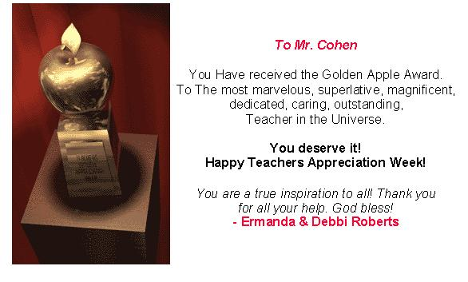
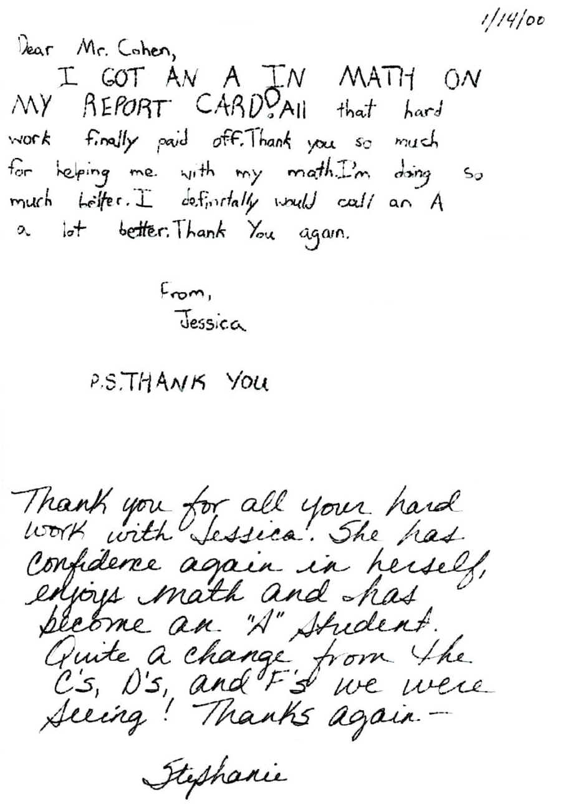

What people are saying about
The Math Program
- 32 years in existence!
27 December 2007: Kelly W. needed to pass her Algebra 2 class with at least a 76 to get into a School of Nursing at Barnes Hospital in St. Louis. She came to work with Don for 2 hours December 22, especially on partial fractions. She called this day to thank Don and tell him she got an 80 on the online test and was accepted into the School of Nursing! What a nice way to end the year!!Don had his daughter Kirsten from 4 years old, maybe through 10th grade at UNI high. She just graduated with an M.A. from Munich U. in Germany. She is fluent in German and Italian, speaks some Thai, and will be studying Chinese soon.
Don
had his son Charles from 5th-9th grade, also a UNI graduate. Charles received an
A.B. in Physics from Princeton (Magna cum Laude) in 2006, just received an M.Sc. in Mathematics
(with distinction) from Oxford in
England, on a scholarship, and in 2007 is
in a Ph.D. program in Physics at UC
Berkeley. Would you say Dad was proud!!??
(and Don also!) After
Don congratulated Charles by email, on
27 March
he wrote back:
Incidentally,
my dissertation
was actually in... the theory of groups!
12 June 2007: "Dear Mr. Cohen, Thank you for the absolutely beautiful watercolor. We're hanging it the dining room where all see it every day, and whenever I look at it I'll think of you. Thank you too, for coming to my graduation party. It was so wonderful getting a chance to talk with you again. You are one of the best teachers I've ever had, and I'll be sure to stay in touch. Love, Katy" [Katy came for 3 summers while she went to UNI High. She did some fine, unique work on infinite series and the area under a sine wave, that Don had not seen before.]
Lori is so excited about Math now.
Her confidence has
soared. I even saw her worksheet she wrote out for her reading teacher which
asked "What class do you expect to receive an A in this year?" Lori's response, with no erasure marks was MATH!
This is a boost for both of us as Lori began 5th grade with a C in
Math for the first quarter which lead us to you, the Mathman. Since she
received an A for the second quarter of 5th grade and ended the year with a
final grade of B+. She did very well on her ISAT exams and is beginning
6th grade, placed in Honors Math. We look forward to continuing to work
with you. Oh by the way, Lori's favorite subject now.....MATH!
Thank you
Doris (Lori's Mom) [Lori continues to work with Don in preparing for the UNI test she is going to take.]
6 July 2005 Don received this email from Debbie:
"A big hug to you, I hope you are well, and thank you for all you have done to open the excitement of real mathematics to so many. I know J. tells me, often, that you have changed the life of her daughter." -Debbie, WVOctober 17, 2003 Jerry met the mother of one of Don's students from the past. Her daughter went to summer classes Don held at Mt. Olive Church in Urbana at reduced rates. "My daughter Tameka was doing badly at school in about 4th grade. After 5 weeks with Don, when she went back to school, she was way ahead! She is now about to get a Ph.D. in Veterinary Medicine".
September 5, 2003 Don and his wife went to a bed & breakfast in Bloomington, IL for a couple of days. When they entered, the owner asked Don if he taught math. Would you believe Don had her daughter during the summer 16 years ago, at age 6! "He was kind. She had a great time". A small world!
August 2003 At lunch Don happened to meet Marge, a retired teacher, one of Don's former students herself and the mother of 2 of his former students. Vickie, her daughter, has 2 children, an M.A., and works as a systems analyst in St. Louis. Her son Tim is getting a Ph.D. in Physics at UMN. "As teenagers they really wanted to come to The Math Program- that was wonderful!" The work Vickie did in studying the growth of the Chambered Nautilus using its shell, is in Don's worksheet book.
July 22, 2003 Debbie, the mother of one of Jerry's students, told Don that her son was a high school math teacher! Way to go Jerry!
June 20, 2003 At lunch, Don and his wife met Mr. & Mrs. H., parents of 5 of his former students. Matt is married with a son, and is a baseball player. Marci is married with a son, and her husband is a baseball player. Kara graduated from the UIC in nursing. Adam who was at lunch is a junior at the UI in communications. Don still has pictures of Marci and Kara on the wall of his Math room. WOW, what a wonderful 3-day meeting of parents of Don's former students!
June 19, 2003 Don met Mrs. D. in the grocery store; he had her 2 daughters about 8 years ago. One is now an Optometrist in Chicago; this young lady helped Don when he gave classes at Mt. Olive Church in Urbana one summer. Her other daughter is getting an MA in Nutrition at the UI.
June 18, 2003 Dr. Z, after hugging both Don and his wife, told Don that her son Rishi graduated from Brown U. majoring in writing, both he and his wife are poets, he is doing legal outreach in Brooklyn, and plans to go to Law school. His sister Pari is graduating from college in December. Don had both children before they went to UNI high years ago.
June 18, 2003 The mother of a former student Emily, told Don that her daughter was planning to teach 7th and 8th grade math next year in a suburb of Chicago!
March 19, 2003
Don received this email:
"..Your web site is really very impressive. I still have not seen
anyone with a program like yours, local math kids are so lucky. It's great
that you can do it by email, too. My little friend in Palo Alto for whom I
bought your video and books is turning into a more mature mathematician, he is
now 14. ..They wish they had someone like you in the Bay Area". -
Professor, UI and mother of one of Don's former students, now at Columbia U, a
physics major.
February, 2003 found on "Spouses of Doctors" site:
"When I was in the fifth grade, I had a
teacher who spent the year teaching us sign language instead of anything else.
Her son was deaf, blind and mute, and so her world revolved around that....I
went from being in the top of the math heap to the bottom when I entered 6th
grade. It really affected my self-esteem because it was such a rapid decline,
and my friends with other teachers were still in the top group....
My mom signed me up for a math summer session with Don Cohen. He was a local guy
that eventually ended up writing books on the subject...that summer really
changed things for me and gave me a real confidence booster! When I entered
junior high I tested back in the top group and the things that I learned that
summer have still stuck with me...
He has a website now and sells several of his learning tools..it isn't too
expensive...Really, I can't recommend him enough. It changed things for me...I'm
31 years old and I still remember it. The website is www.mathman.biz/".
January 30, 2003
I have A.D.D and last year in my math class I was struggling with a C-, if I was lucky! My mom found Mr. Cohen and I began studying with him and my grades improved! I know it's a new school year and I have brought home nothing but A's on my tests and report card! It was good to know I wouldn't have to bring home a C on my report card. Thanks Mr. Cohen .
January 9, 2003 Mark, a former student Don had for 10 years (off and on), picked up his sister from class. He told Don he is studying at Eastern IL U, and is getting a B in Calculus. He was pleased. He has been writing computer games for a long time and one game is doing very, very well, world wide. The students know more than the teacher- that's great! Don & Jerry both had trouble writing programs on PLATO when they first came to Champaign. They designed what would go on the screen, then hired high school kids to do the programming!
Actually, she got A or A- in all her subjects, so her grade point, at this stage, is 4.0. (A or A- both = 4 points.)
Cheers" -- Maggie's Dad (Don has worked with Maggie from 2nd grade until the present). See Maggie's work on the difference of two cubes when she was 9 years old. This was also made into a java applet in Japan.
June, 2002: "Even though I have only been blessed with your presence for a few months, I am truly grateful. At the word "math", I used to run in the other direction. Now I feel I can at least try to do the problem. My confidence has grown, my abilities have grown too. All because of you. And while I may say goodbye to you now, a part of you will always be with me, and all of your students. For all you have done, thank you. You have truly touched my life. Thank you."--S.M., completed HS junior year.

October 3, 2000: "Dear
Mr. Glynn, ..I have been very pleased with the progress Eric has made since he
started in The Math Program in June. Not only have his skills improved, but his
confidence as well. Thank you for the terrific job that you do". -- Debra
K. (mother)
Sept., 2000: "Dear
Jerry,.. Julien is doing very well in math now. I think you helped enormously
with his self-confidence in math. Thanks". -- Vickie A. (mother)
Mr. Cohen's emphasis on principles
and basic understanding provides an invaluable basis upon which to build skill
and drill math problems successfully". -- H.C., mother of two of Don's
students.
August, 2000:
June 2000: '..We
are very grateful for all that you've done for Maggie. We give you a lot
of
A note from Jessica, an 6th grader, and her
mother on 1/14/00

"Mr. Cohen,
Greetings from Ohio! I've always meant to keep in touch but time seems to slip by. Now that I'm ready to graduate I thought I'd drop you a line to tell you how much I appreciate the few years I got to work with you in The Math Program. You instilled a love for math in me that was able to get me through many hours of boring high school math.
I will be graduating June 5th as valedictorian of my class. Through the Academy Program offered by the state of Ohio, I was able to attend the local branch of Ohio State my junior and senior years and will graduate with 65 hours of college credit.
I am a National Merit Finalist and attending Ohio State Honors Program on a full academic scholarship.
Even though my math teachers tried to put me down for my odd ways of performing math, I managed a 790 on my math SAT and am planning on majoring in both math and psychology.
I've always regretted having to move away from your program, but what you gave me really helped mold who I am today. Many thanks. I'm sure our paths will cross some day. Thanks for your inspiration, Kohler". See some of Kohler's work , used in Don's books.
Jonathan with the oscilloscope and oscillator
June 1998: "Until a year ago, my son had always struggled with math. The traditional way math was being taught to him in school didn't seem to click with him. In order to get the correct answer, he would break the figures down in a different way than that of his fellow students. Every time they were given a test in math everybody else would be turning the page while my son was still working on problems on the first page. It would then become evident to him that he was not keeping up with the rest of the class. He felt as though he was stupid in math even though he excelled in the other subjects.
After two
summers in The Math Program, my son now lives and breathes math.
He is a freshman in high school and is taking geometry, which just
happens to be his favorite subject this year.
His math of choice is trigonometry, which he also learned from Mr. Cohen, along with Calculus. His aspirations have changed slightly since he met Mr. Cohen. He wanted to be a computer engineer, but now plans to get a PHD in computer science along with a PHD in calculus and physics. That's quite an attitude change for someone who was lost in the system and just about fell through the cracks. Thank goodness there is another option and that is The Math Program!
From grade schoolers through adults, everyone needs to believe in him or herself and have great expectations. My son now says, 'I can do anything I want to do', because he knows 'math is power'.
Many, many thanks Mr. Cohen for taking my sons' life in a new direction". --Carol S., with son Jonathan. (see some of Jonathan's work).